Implementacion#
Librerias#
import pandas as pd
import matplotlib.pyplot as plt
import seaborn as sns
import numpy as np
from sklearn.model_selection import train_test_split,cross_val_score,StratifiedKFold
from sklearn.preprocessing import StandardScaler, OneHotEncoder
from statsmodels.stats.outliers_influence import variance_inflation_factor
from sklearn.pipeline import Pipeline
from sklearn.compose import ColumnTransformer
from sklearn.impute import SimpleImputer
from sklearn.metrics import (
confusion_matrix, accuracy_score, precision_score, recall_score, f1_score,
roc_curve, auc, RocCurveDisplay,classification_report,roc_auc_score
)
from sklearn.naive_bayes import GaussianNB
from sklearn.linear_model import LogisticRegression
Cargado de datos#
df=pd.read_csv('processed.cleveland.data',na_values='?')
df.head()
| 63.0 | 1.0 | 1.0.1 | 145.0 | 233.0 | 1.0.2 | 2.0 | 150.0 | 0.0 | 2.3 | 3.0 | 0.0.1 | 6.0 | 0 | |
|---|---|---|---|---|---|---|---|---|---|---|---|---|---|---|
| 0 | 67.0 | 1.0 | 4.0 | 160.0 | 286.0 | 0.0 | 2.0 | 108.0 | 1.0 | 1.5 | 2.0 | 3.0 | 3.0 | 2 |
| 1 | 67.0 | 1.0 | 4.0 | 120.0 | 229.0 | 0.0 | 2.0 | 129.0 | 1.0 | 2.6 | 2.0 | 2.0 | 7.0 | 1 |
| 2 | 37.0 | 1.0 | 3.0 | 130.0 | 250.0 | 0.0 | 0.0 | 187.0 | 0.0 | 3.5 | 3.0 | 0.0 | 3.0 | 0 |
| 3 | 41.0 | 0.0 | 2.0 | 130.0 | 204.0 | 0.0 | 2.0 | 172.0 | 0.0 | 1.4 | 1.0 | 0.0 | 3.0 | 0 |
| 4 | 56.0 | 1.0 | 2.0 | 120.0 | 236.0 | 0.0 | 0.0 | 178.0 | 0.0 | 0.8 | 1.0 | 0.0 | 3.0 | 0 |
#Añadimos los nombres de las columnas
df.columns = ["edad", "sexo", "dolor_toracico", "presion_reposo", "colesterol",
"azucar_en_sangre", "electrocardiograma", "frecuencia_max",
"angina", "oldpeak", "pendiente", "vessel", "thal", "target"]
df.head()
| edad | sexo | dolor_toracico | presion_reposo | colesterol | azucar_en_sangre | electrocardiograma | frecuencia_max | angina | oldpeak | pendiente | vessel | thal | target | |
|---|---|---|---|---|---|---|---|---|---|---|---|---|---|---|
| 0 | 67.0 | 1.0 | 4.0 | 160.0 | 286.0 | 0.0 | 2.0 | 108.0 | 1.0 | 1.5 | 2.0 | 3.0 | 3.0 | 2 |
| 1 | 67.0 | 1.0 | 4.0 | 120.0 | 229.0 | 0.0 | 2.0 | 129.0 | 1.0 | 2.6 | 2.0 | 2.0 | 7.0 | 1 |
| 2 | 37.0 | 1.0 | 3.0 | 130.0 | 250.0 | 0.0 | 0.0 | 187.0 | 0.0 | 3.5 | 3.0 | 0.0 | 3.0 | 0 |
| 3 | 41.0 | 0.0 | 2.0 | 130.0 | 204.0 | 0.0 | 2.0 | 172.0 | 0.0 | 1.4 | 1.0 | 0.0 | 3.0 | 0 |
| 4 | 56.0 | 1.0 | 2.0 | 120.0 | 236.0 | 0.0 | 0.0 | 178.0 | 0.0 | 0.8 | 1.0 | 0.0 | 3.0 | 0 |
Funciones#
def Summary(data, sheet):
print(f"Hoja: {sheet}")
# Crear la tabla de resumen
resumen = {
"Cantidad de filas": data.shape[0],
"Cantidad de columnas": data.shape[1],
"Datos faltantes": data.isnull().sum().sum(),
"Filas duplicadas": data.duplicated().sum()
}
# Convertir el resumen en un DataFrame
ResumenHoja = pd.DataFrame(resumen, index=["Resumen"])
print("\nResumen:")
display(ResumenHoja)
print("\nEncabezado:")
display(data.head())
def graficar_distribuciones(df, columnas, bins=30):
sns.set(style="whitegrid", palette="muted")
n = len(columnas)
fig, axes = plt.subplots(nrows=n, ncols=2, figsize=(12, 4*n))
for i, col in enumerate(columnas):
# Histograma con KDE
sns.histplot(data=df, x=col, kde=True, bins=bins, ax=axes[i,0], color="skyblue")
axes[i,0].set_title(f"Histograma de {col}", fontsize=12)
axes[i,0].set_xlabel("")
axes[i,0].set_ylabel("Frecuencia")
# Boxplot
sns.boxplot(data=df, x=col, ax=axes[i,1], color="lightcoral")
axes[i,1].set_title(f"Boxplot de {col}", fontsize=12)
axes[i,1].set_xlabel("")
plt.suptitle("Distribuciones de variables numéricas", fontsize=16, y=1.02)
plt.tight_layout()
plt.show()
Analisis exploratorio de datos#
Summary(df,'Datos pacientes')
Hoja: Datos pacientes
Resumen:
| Cantidad de filas | Cantidad de columnas | Datos faltantes | Filas duplicadas | |
|---|---|---|---|---|
| Resumen | 302 | 14 | 6 | 0 |
Encabezado:
| edad | sexo | dolor_toracico | presion_reposo | colesterol | azucar_en_sangre | electrocardiograma | frecuencia_max | angina | oldpeak | pendiente | vessel | thal | target | |
|---|---|---|---|---|---|---|---|---|---|---|---|---|---|---|
| 0 | 67.0 | 1.0 | 4.0 | 160.0 | 286.0 | 0.0 | 2.0 | 108.0 | 1.0 | 1.5 | 2.0 | 3.0 | 3.0 | 2 |
| 1 | 67.0 | 1.0 | 4.0 | 120.0 | 229.0 | 0.0 | 2.0 | 129.0 | 1.0 | 2.6 | 2.0 | 2.0 | 7.0 | 1 |
| 2 | 37.0 | 1.0 | 3.0 | 130.0 | 250.0 | 0.0 | 0.0 | 187.0 | 0.0 | 3.5 | 3.0 | 0.0 | 3.0 | 0 |
| 3 | 41.0 | 0.0 | 2.0 | 130.0 | 204.0 | 0.0 | 2.0 | 172.0 | 0.0 | 1.4 | 1.0 | 0.0 | 3.0 | 0 |
| 4 | 56.0 | 1.0 | 2.0 | 120.0 | 236.0 | 0.0 | 0.0 | 178.0 | 0.0 | 0.8 | 1.0 | 0.0 | 3.0 | 0 |
Podemos observar que hay algunos valores faltantes presentes en estos datos
df.info()
<class 'pandas.core.frame.DataFrame'>
RangeIndex: 302 entries, 0 to 301
Data columns (total 14 columns):
# Column Non-Null Count Dtype
--- ------ -------------- -----
0 edad 302 non-null float64
1 sexo 302 non-null float64
2 dolor_toracico 302 non-null float64
3 presion_reposo 302 non-null float64
4 colesterol 302 non-null float64
5 azucar_en_sangre 302 non-null float64
6 electrocardiograma 302 non-null float64
7 frecuencia_max 302 non-null float64
8 angina 302 non-null float64
9 oldpeak 302 non-null float64
10 pendiente 302 non-null float64
11 vessel 298 non-null float64
12 thal 300 non-null float64
13 target 302 non-null int64
dtypes: float64(13), int64(1)
memory usage: 33.2 KB
Podemos observar que se toman como numericas algunas variables que los numeros representan categorias, estas se van a transformar a categoricas
categoricas=['sexo','dolor_toracico','azucar_en_sangre','electrocardiograma','angina','pendiente','thal']
df[categoricas]=df[categoricas].astype(object)
df.info()
<class 'pandas.core.frame.DataFrame'>
RangeIndex: 302 entries, 0 to 301
Data columns (total 14 columns):
# Column Non-Null Count Dtype
--- ------ -------------- -----
0 edad 302 non-null float64
1 sexo 302 non-null object
2 dolor_toracico 302 non-null object
3 presion_reposo 302 non-null float64
4 colesterol 302 non-null float64
5 azucar_en_sangre 302 non-null object
6 electrocardiograma 302 non-null object
7 frecuencia_max 302 non-null float64
8 angina 302 non-null object
9 oldpeak 302 non-null float64
10 pendiente 302 non-null object
11 vessel 298 non-null float64
12 thal 300 non-null object
13 target 302 non-null int64
dtypes: float64(6), int64(1), object(7)
memory usage: 33.2+ KB
Analisis Univariado#
Realizamos el analisis univariado de cada una de las variables del dataset, empezando por las variables numericas
numericas = ['edad', 'presion_reposo', 'colesterol', 'frecuencia_max', 'oldpeak','vessel']
graficar_distribuciones(df,numericas)
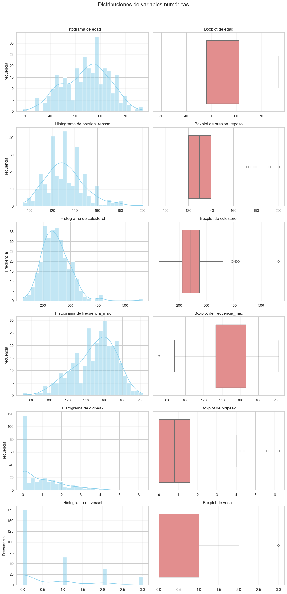
Podemos observar que algunas de las variables tienen datos atipicos, Principalmente de las variables de oldpeak,presion_reposo y colesterol, sin embargo estos outliers son importantes datos a tomar en cuenta para el modelo por lo que no se deben tratar.
Analizamos las variables categoricas
for col in categoricas:
df[col].value_counts()
sns.countplot(data=df, x=col, order=df[col].value_counts().index)
plt.title(f'Distribución de {col}')
plt.xticks(rotation=45)
plt.show()
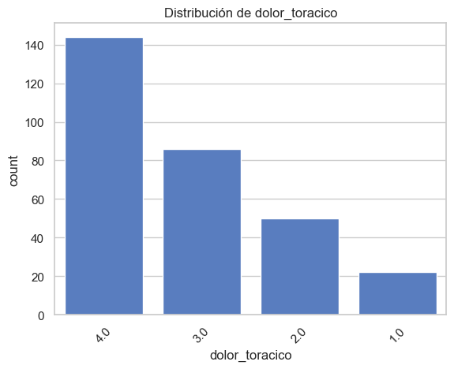
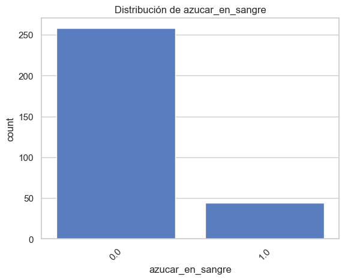
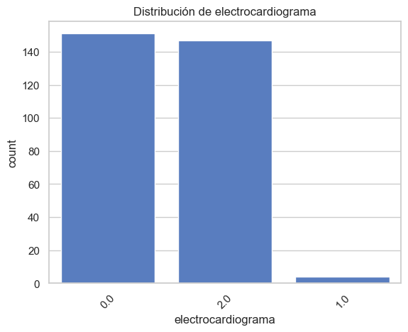
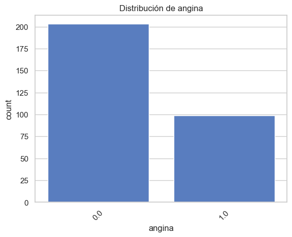
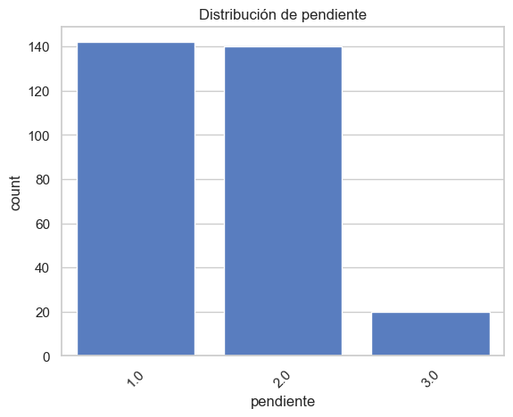
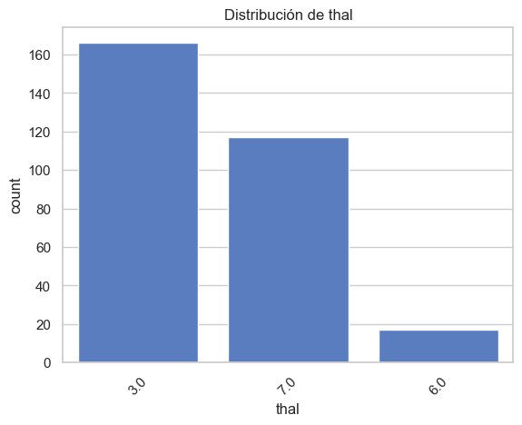
Analizamos la distribucion de la variable target
df['target'].value_counts()
target
0 163
1 55
2 36
3 35
4 13
Name: count, dtype: int64
Podemos observar que la variable target no esta en formato binario sino que esta en una escala entre 0 y 4 con 0 siendo ausencia de enfermedad, se va a convertir target a binaria para poder utilizarla despues en el modelo
df['target'] = df['target'].apply(lambda x: 0 if x == 0 else 1)
df['target'].value_counts()
target
0 163
1 139
Name: count, dtype: int64
sns.set_style('whitegrid')
plt.title('Conteo de Riesgo de enfermedad cardiaca')
sns.countplot(x=df.target)
plt.xlabel('Target')
plt.ylabel('Frecuencia')
plt.show()
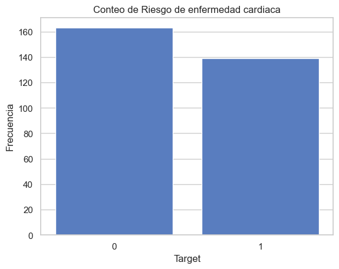
Podemos observar que no existe una gran diferencia entre las categorias 0 y 1 de la variable target, por lo tanto podemos decir que el dataset esta relativamente balanceado
Se revisan el numero de datos faltantes asi como su porcentaje
total=df.isna().sum()
print('Numero de faltantes: \n', total)
Numero de faltantes:
edad 0
sexo 0
dolor_toracico 0
presion_reposo 0
colesterol 0
azucar_en_sangre 0
electrocardiograma 0
frecuencia_max 0
angina 0
oldpeak 0
pendiente 0
vessel 4
thal 2
target 0
dtype: int64
Podemos observar que el porcentaje de datos faltantes es muy bajo y no supera el 1%, se realizara imputacion simple para abarcarlos dentro del pipeline
Preprocesamiento de datos#
Creacion de pipelines#
Se crean los pipelines para el preprocesamiento de datos
#Pipeline Categorico
Pipe_cat = Pipeline(steps=[
("imputer", SimpleImputer(strategy='most_frequent')),
('onehot', OneHotEncoder(handle_unknown='ignore', drop='first', sparse_output=False))
])
#pipeline numerico
Pipe_num=Pipeline(steps=[
("imputer", SimpleImputer(strategy='median')),
('scaler', StandardScaler())
])
#Preprocesamiento mediante column transformer
preprocesador = ColumnTransformer(
transformers=[
('num', Pipe_num, numericas),
('cat', Pipe_cat, categoricas)
]
)
Creamos el pipeline principal
#Pipeline Principal con preprocesamiento y modelo
Pipe = Pipeline(steps=[
('preprocesador', preprocesador),
('modelo', GaussianNB())
])
Split de los datos#
X=df.drop(columns='target')
Y=df['target']
X_train, X_test, y_train, y_test = train_test_split(X, Y, test_size=0.2, random_state=0)
Pipe.fit(X_train,y_train)
Pipeline(steps=[('preprocesador',
ColumnTransformer(transformers=[('num',
Pipeline(steps=[('imputer',
SimpleImputer(strategy='median')),
('scaler',
StandardScaler())]),
['edad', 'presion_reposo',
'colesterol',
'frecuencia_max', 'oldpeak',
'vessel']),
('cat',
Pipeline(steps=[('imputer',
SimpleImputer(strategy='most_frequent')),
('onehot',
OneHotEncoder(drop='first',
handle_unknown='ignore',
sparse_output=False))]),
['sexo', 'dolor_toracico',
'azucar_en_sangre',
'electrocardiograma',
'angina', 'pendiente',
'thal'])])),
('modelo', GaussianNB())])In a Jupyter environment, please rerun this cell to show the HTML representation or trust the notebook. On GitHub, the HTML representation is unable to render, please try loading this page with nbviewer.org.
Pipeline(steps=[('preprocesador',
ColumnTransformer(transformers=[('num',
Pipeline(steps=[('imputer',
SimpleImputer(strategy='median')),
('scaler',
StandardScaler())]),
['edad', 'presion_reposo',
'colesterol',
'frecuencia_max', 'oldpeak',
'vessel']),
('cat',
Pipeline(steps=[('imputer',
SimpleImputer(strategy='most_frequent')),
('onehot',
OneHotEncoder(drop='first',
handle_unknown='ignore',
sparse_output=False))]),
['sexo', 'dolor_toracico',
'azucar_en_sangre',
'electrocardiograma',
'angina', 'pendiente',
'thal'])])),
('modelo', GaussianNB())])ColumnTransformer(transformers=[('num',
Pipeline(steps=[('imputer',
SimpleImputer(strategy='median')),
('scaler', StandardScaler())]),
['edad', 'presion_reposo', 'colesterol',
'frecuencia_max', 'oldpeak', 'vessel']),
('cat',
Pipeline(steps=[('imputer',
SimpleImputer(strategy='most_frequent')),
('onehot',
OneHotEncoder(drop='first',
handle_unknown='ignore',
sparse_output=False))]),
['sexo', 'dolor_toracico', 'azucar_en_sangre',
'electrocardiograma', 'angina', 'pendiente',
'thal'])])['edad', 'presion_reposo', 'colesterol', 'frecuencia_max', 'oldpeak', 'vessel']
SimpleImputer(strategy='median')
StandardScaler()
['sexo', 'dolor_toracico', 'azucar_en_sangre', 'electrocardiograma', 'angina', 'pendiente', 'thal']
SimpleImputer(strategy='most_frequent')
OneHotEncoder(drop='first', handle_unknown='ignore', sparse_output=False)
GaussianNB()
Evaluacion de correlacion y multicolinealidad#
ohe = Pipe.named_steps['preprocesador'].named_transformers_['cat'].named_steps['onehot']
cat_feature_names = ohe.get_feature_names_out(categoricas)
num_feature_names = numericas
all_features = list(num_feature_names) + list(cat_feature_names)
X_train_procesado= Pipe.named_steps['preprocesador'].transform(X_train)
df_processed = pd.DataFrame(X_train_procesado, columns=all_features)
corr_matrix = df_processed.corr()
plt.figure(figsize=(12, 8))
sns.heatmap(corr_matrix, annot=True, cmap='coolwarm', fmt=".2f")
plt.title('Matriz de Correlación')
plt.show()
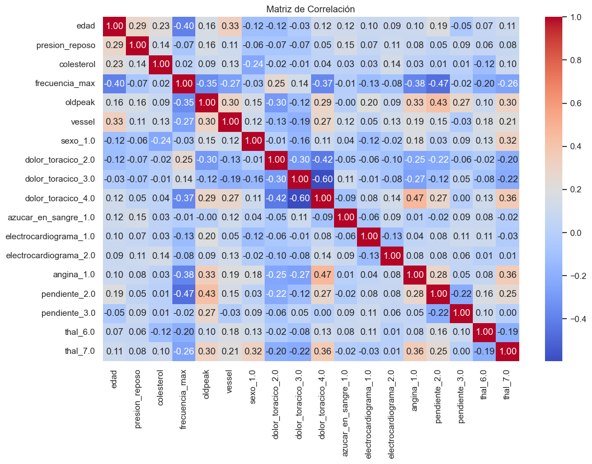
vif_data = pd.DataFrame()
vif_data["feature"] = df_processed.columns
vif_data["VIF"] = [variance_inflation_factor(df_processed.values, i)
for i in range(df_processed.shape[1])]
print(vif_data.sort_values("VIF", ascending=False))
feature VIF
9 dolor_toracico_4.0 3.748691
6 sexo_1.0 3.716035
14 pendiente_2.0 2.983808
17 thal_7.0 2.628663
13 angina_1.0 2.282748
12 electrocardiograma_2.0 2.038217
8 dolor_toracico_3.0 2.036162
4 oldpeak 1.828869
7 dolor_toracico_2.0 1.743348
3 frecuencia_max 1.729784
0 edad 1.488350
15 pendiente_3.0 1.437838
16 thal_6.0 1.387046
5 vessel 1.362847
10 azucar_en_sangre_1.0 1.302738
2 colesterol 1.216721
1 presion_reposo 1.177601
11 electrocardiograma_1.0 1.133935
Podemos observar que ninguno de las variables tiene un VIF lo suficientemente alto para considerar eliminacion debido a multicolinealidad
Evaluacion del mejor modelo con crossvalidation#
Se realiza una evaluacion con cross-validation para encontrar el mejor modelo
cv = StratifiedKFold(n_splits=5, shuffle=True, random_state=0)
scores = cross_val_score(Pipe, X, Y, cv=cv)
print("Cross-validation scores:\n{}".format(scores))
print("Accuracy promedio:", np.mean(scores))
Cross-validation scores:
[0.85245902 0.73770492 0.8 0.88333333 0.7 ]
Accuracy promedio: 0.7946994535519126
Evaluacion de metricas#
Se realizan la evaluacion de metricas para el modelo de GaussianNB
y_pred = Pipe.predict(X_test)
Matriz de confusion y classification report#
print("Confusion Matrix:\n", confusion_matrix(y_test, y_pred))
Confusion Matrix:
[[27 6]
[ 3 25]]
Podemos observar que la matriz de confusion es bastante equilibrada en cuanto a los errores
print("Classification report:\n", classification_report(y_test, y_pred))
Classification report:
precision recall f1-score support
0 0.90 0.82 0.86 33
1 0.81 0.89 0.85 28
accuracy 0.85 61
macro avg 0.85 0.86 0.85 61
weighted avg 0.86 0.85 0.85 61
scores = {
"Accuracy": accuracy_score(y_test, y_pred),
"Precision ": precision_score(y_test, y_pred),
"Recall ": recall_score(y_test, y_pred),
"F1-score ": f1_score(y_test, y_pred)
}
scores_df = pd.DataFrame(scores, index=["Score"])
print("\nTabla de métricas globales:\n")
print(scores_df)
Tabla de métricas globales:
Accuracy Precision Recall F1-score
Score 0.852459 0.806452 0.892857 0.847458
Podemos observar que el modelo tiene un accuracy del 0.85, en general podemos observar que el f1 score de ambos es relativamente similar con la clase de ausencia de enfermedad teniendo un poco mas, siendo esta clase predicha con mayor precision pero la clase 1 tiene mayor recall y es detectada de mejor manera
Curva ROC y AUC#
y_prob = Pipe.predict_proba(X_test)[:, 1]
# Curva ROC y AUC
fpr, tpr, thresholds = roc_curve(y_test, y_prob)
roc_auc = auc(fpr, tpr)
print("AUC:", roc_auc)
RocCurveDisplay(fpr=fpr, tpr=tpr, roc_auc=roc_auc, estimator_name="GaussianNB").plot()
plt.show()
AUC: 0.8777056277056278
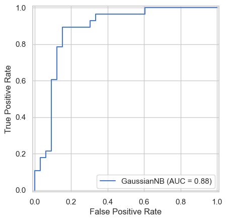
plt.figure(figsize=(6,4))
sns.countplot(x=y_pred, palette="Set2")
plt.title("Distribución de predicciones del modelo")
plt.xlabel("Clase predicha")
plt.ylabel("Cantidad")
plt.show()
C:\Users\migue\AppData\Local\Temp\ipykernel_15756\3828654112.py:2: FutureWarning:
Passing `palette` without assigning `hue` is deprecated and will be removed in v0.14.0. Assign the `x` variable to `hue` and set `legend=False` for the same effect.
sns.countplot(x=y_pred, palette="Set2")
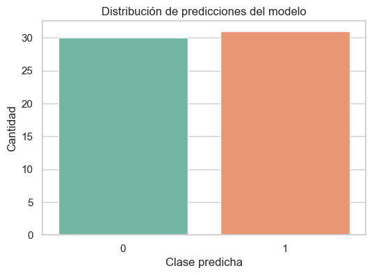
Podemos analizar del grafico de distribucion de predicciones que el modelo predice ambas clases de manera bastante balanceada lo cual es consistente con los scores realizados anteriormente, podemos ver que hay una ligera preferencia a predecir la clase 1 pero no es lo suficientemente significativa como para alterar los resultados
plt.figure(figsize=(8,5))
sns.histplot(y_prob[y_test==0], color="red", label="Clase real 0", kde=True, stat="density", bins=10, alpha=0.6)
sns.histplot(y_prob[y_test==1], color="green", label="Clase real 1", kde=True, stat="density", bins=10, alpha=0.6)
plt.title("Distribución de probabilidades condicionales")
plt.xlabel("Probabilidad predicha de clase 1")
plt.ylabel("Densidad")
plt.legend()
plt.show()
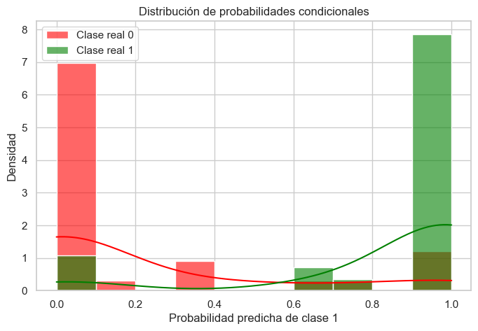
Podemos observar con el grafico de distribucion de probabilidades condicionales que el modelo realiza las predicciones de manera confiable y separada entre las 2 clases. Podemos observar que la mayoria de las predicciones de 0 se agrupan en 0 y las predicciones para la clase 1 se agrupan en 1, lo cual es ideal para este tipo de graficos
Comparacion con el modelo logistico#
Se realiza un Pipeline con el modelo de LogisticRegression para realizar una comparacion entre su desempeño
Pipe_log = Pipeline(steps=[("preprocesador", preprocesador),
("model", LogisticRegression())])
Pipe_log.fit(X_train,y_train)
Pipeline(steps=[('preprocesador',
ColumnTransformer(transformers=[('num',
Pipeline(steps=[('imputer',
SimpleImputer(strategy='median')),
('scaler',
StandardScaler())]),
['edad', 'presion_reposo',
'colesterol',
'frecuencia_max', 'oldpeak',
'vessel']),
('cat',
Pipeline(steps=[('imputer',
SimpleImputer(strategy='most_frequent')),
('onehot',
OneHotEncoder(drop='first',
handle_unknown='ignore',
sparse_output=False))]),
['sexo', 'dolor_toracico',
'azucar_en_sangre',
'electrocardiograma',
'angina', 'pendiente',
'thal'])])),
('model', LogisticRegression())])In a Jupyter environment, please rerun this cell to show the HTML representation or trust the notebook. On GitHub, the HTML representation is unable to render, please try loading this page with nbviewer.org.
Pipeline(steps=[('preprocesador',
ColumnTransformer(transformers=[('num',
Pipeline(steps=[('imputer',
SimpleImputer(strategy='median')),
('scaler',
StandardScaler())]),
['edad', 'presion_reposo',
'colesterol',
'frecuencia_max', 'oldpeak',
'vessel']),
('cat',
Pipeline(steps=[('imputer',
SimpleImputer(strategy='most_frequent')),
('onehot',
OneHotEncoder(drop='first',
handle_unknown='ignore',
sparse_output=False))]),
['sexo', 'dolor_toracico',
'azucar_en_sangre',
'electrocardiograma',
'angina', 'pendiente',
'thal'])])),
('model', LogisticRegression())])ColumnTransformer(transformers=[('num',
Pipeline(steps=[('imputer',
SimpleImputer(strategy='median')),
('scaler', StandardScaler())]),
['edad', 'presion_reposo', 'colesterol',
'frecuencia_max', 'oldpeak', 'vessel']),
('cat',
Pipeline(steps=[('imputer',
SimpleImputer(strategy='most_frequent')),
('onehot',
OneHotEncoder(drop='first',
handle_unknown='ignore',
sparse_output=False))]),
['sexo', 'dolor_toracico', 'azucar_en_sangre',
'electrocardiograma', 'angina', 'pendiente',
'thal'])])['edad', 'presion_reposo', 'colesterol', 'frecuencia_max', 'oldpeak', 'vessel']
SimpleImputer(strategy='median')
StandardScaler()
['sexo', 'dolor_toracico', 'azucar_en_sangre', 'electrocardiograma', 'angina', 'pendiente', 'thal']
SimpleImputer(strategy='most_frequent')
OneHotEncoder(drop='first', handle_unknown='ignore', sparse_output=False)
LogisticRegression()
y_pred_lr = Pipe_log.predict(X_test)
fig, axes = plt.subplots(1,2, figsize=(12,5))
sns.heatmap(confusion_matrix(y_test, y_pred), annot=True, fmt="d", cmap="Blues", ax=axes[0])
axes[0].set_title("GaussianNB - Matriz de confusión")
axes[0].set_xlabel("Predicción")
axes[0].set_ylabel("Real")
sns.heatmap(confusion_matrix(y_test, y_pred_lr), annot=True, fmt="d", cmap="Greens", ax=axes[1])
axes[1].set_title("LogisticRegression - Matriz de confusión")
axes[1].set_xlabel("Predicción")
axes[1].set_ylabel("Real")
plt.show()
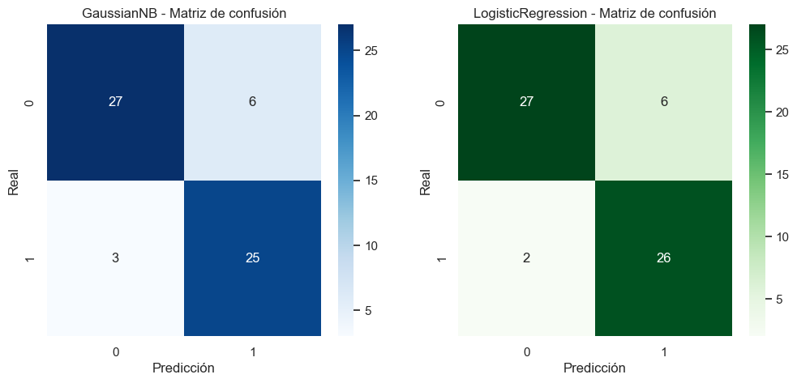
print(classification_report(y_test, y_pred_lr))
precision recall f1-score support
0 0.93 0.82 0.87 33
1 0.81 0.93 0.87 28
accuracy 0.87 61
macro avg 0.87 0.87 0.87 61
weighted avg 0.88 0.87 0.87 61
Podemos observar que tanto en la matriz de confusion y en el classification report los scores no cambian demasiado a comparacion de el modelo GaussianNB teniendo una ligera mejora en cuanto al modelo anterior
Analisis critico y Conclusiones#
Analisis de importancia de variables#
modelo = Pipe.named_steps["modelo"]
print("Medias por clase:\n", modelo.theta_)
print("Varianzas por clase:\n", modelo.var_)
Medias por clase:
[[-0.20616994 -0.16901346 -0.05937811 0.38301381 -0.3955583 -0.42809021
0.55384615 0.26153846 0.43846154 0.21538462 0.15384615 0.00769231
0.40769231 0.16923077 0.27692308 0.05384615 0.02307692 0.16153846]
[ 0.24146029 0.1979437 0.06954193 -0.44857473 0.46326648 0.50136691
0.81981982 0.07207207 0.12612613 0.74774775 0.17117117 0.02702703
0.57657658 0.56756757 0.66666667 0.05405405 0.0990991 0.63063063]]
Varianzas por clase:
[[1.13253913 0.85466981 1.06430736 0.68700326 0.47625333 0.43365356
0.24710059 0.1931361 0.24621302 0.16899408 0.13017752 0.00763314
0.24147929 0.14059172 0.20023669 0.05094675 0.02254438 0.13544379]
[0.73668906 1.09756967 0.91571972 0.99354315 1.21553227 1.19728959
0.14771528 0.06687769 0.11021833 0.18862105 0.1418716 0.02629657
0.24413603 0.24543462 0.22222222 0.05113221 0.08927847 0.23293564]]
means = modelo.theta_
vars_ = modelo.var_
separacion = np.abs(means[0] - means[1]) / np.sqrt(vars_[0] + vars_[1])
feature_importance_nb = pd.DataFrame({
"feature": all_features,
"separacion": separacion
}).sort_values("separacion", ascending=False)
print(feature_importance_nb)
feature separacion
9 dolor_toracico_4.0 0.890225
17 thal_7.0 0.772877
5 vessel 0.727796
4 oldpeak 0.660286
3 frecuencia_max 0.641480
13 angina_1.0 0.641124
14 pendiente_2.0 0.599635
8 dolor_toracico_3.0 0.523158
6 sexo_1.0 0.423293
7 dolor_toracico_2.0 0.371564
0 edad 0.327407
1 presion_reposo 0.262633
12 electrocardiograma_2.0 0.242350
16 thal_6.0 0.227340
11 electrocardiograma_1.0 0.104966
2 colesterol 0.091619
10 azucar_en_sangre_1.0 0.033216
15 pendiente_3.0 0.000651
plt.figure(figsize=(10,6))
feature_importance_nb.sort_values("separacion", ascending=True).plot(
x="feature", y="separacion", kind="barh", legend=False, figsize=(10,6),
color="skyblue", edgecolor="black"
)
plt.xlabel("Separación entre clases")
plt.title("Importancia de variables según GaussianNB")
plt.tight_layout()
plt.show()
<Figure size 1000x600 with 0 Axes>
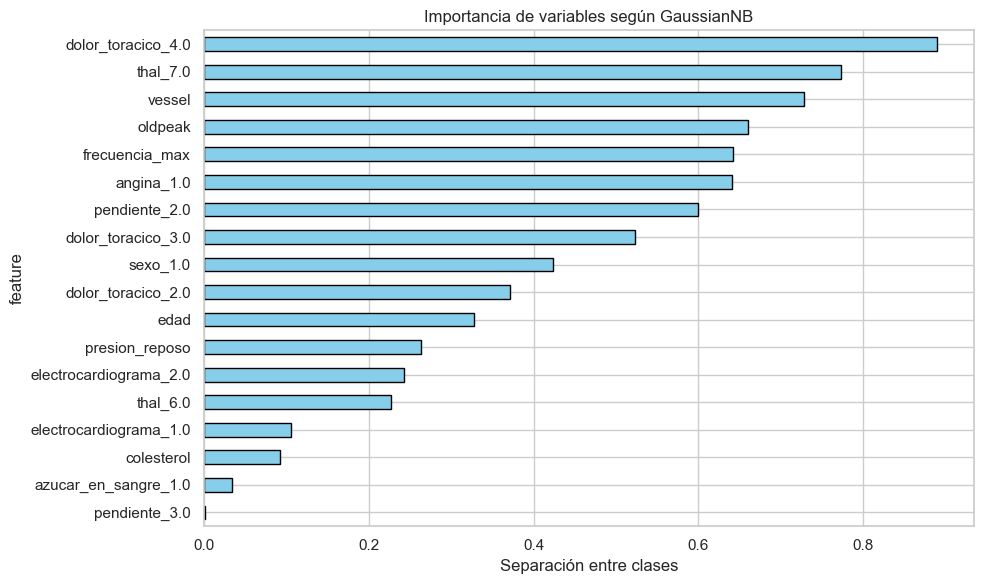
Se utiliza una formula de discriminacion estadistica para estimar cuanto contribuye cada variable con la separacion de clases y cual influye mas para distinguir entre clases
Podemos observar que las variables que mas influyen son dolor toracico asimptomatico, thal con defecto reversible,vessel,oldpeak y la frecuencia maxima de latidos
Analisis de modelo de Bayes#
El modelo Naive Bayes Gaussiano mostró un desempeño general sólido, con una accuracy del 85%, y un balance aceptable entre precision y recall para ambas clases (enfermo y no enfermo). Esto resalta una de sus principales fortalezas: es simple, rápido de entrenar y eficiente, incluso con un conjunto de datos relativamente pequeño.
Sin embargo su desempeño tambien se ve influenciado por su principal limitacion. La asuncion de independencia condicional entre variables. En el contexto dado algunas de las variables estan correlacionadas por lo que no se cumple esta suposicion. Aunque el modelo pudo lograr capturar patrones relevantes, por lo que en este contexto no afecta demasiado que no se cumpla este supuesto como si lo haria en un caso mas complejo que este
Reflexion en el ambito medico#
El hecho de que el modelo Naive Bayes Gaussiano haya alcanzado un buen desempeño, a pesar de la correlación entre algunas variables, demuestra que incluso enfoques estadísticamente simples pueden aportar valor en la práctica clínica. En un entorno médico, donde los datos suelen ser limitados, incompletos o costosos de obtener, contar con un modelo ligero y eficiente resulta ventajoso: permite generar diagnósticos preliminares de forma rápida, lo que podría ayudar a los profesionales de la salud a priorizar casos y tomar decisiones más oportunas.
No obstante, también debemos ser conscientes de la limitación inherente al supuesto de independencia condicional. En medicina, las variables rara vez son independientes: síntomas, antecedentes y resultados de laboratorio suelen estar fuertemente interrelacionados. Ignorar estas correlaciones puede derivar en sesgos o en interpretaciones demasiado simplificadas de la realidad clínica.
Así, la reflexión clave es que un modelo como Naive Bayes puede ser un punto de partida confiable para apoyar diagnósticos en escenarios simples o de recursos limitados, pero no debería considerarse definitivo en contextos más complejos o de alta criticidad, donde la correlación entre variables es determinante y donde un error de predicción puede tener consecuencias graves para el paciente. En esos casos, sería más prudente complementarlo con modelos más robustos o usarlo como herramienta auxiliar dentro de un sistema de soporte a la decisión clínica, y no como sustituto del criterio médico.